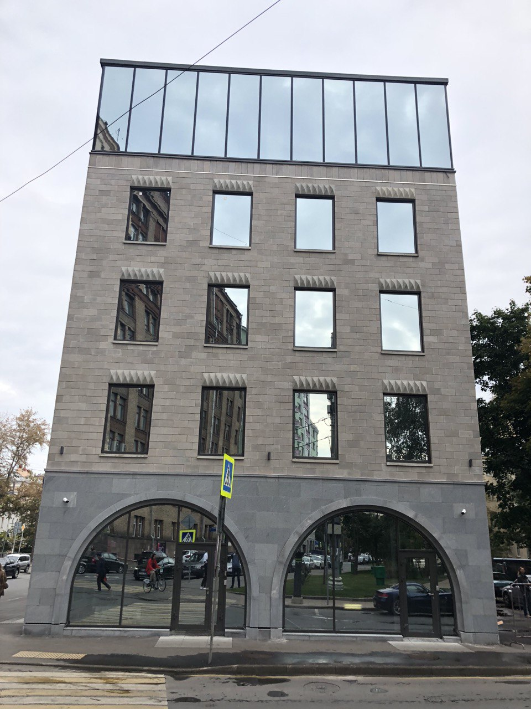

Services
Consulting for
developers
What is a Consulting Company?
A consulting company is a professional service company that provides expertise and specialized labor for a fee using consultants. Consulting services in the field of residential real estate are aimed at investors, developers and builders.
Types of consulting work for developers:
- Integrated development of territories;
- Multi-apartment residential complexes;
- Country cottage settlements;
- Apartments;
- Tourist infrastructure facilities: hotels, spas, resort complexes;
- Multifunctional complexes;
- Office centers and coworking spaces (flexible office spaces);
- Industrial and warehouse real estate, including a light-industrial format project.
Our examples of construction-related work

In this photo we can see the result of the work we did, which was done to the highest possible quality. All rules and wishes were followed. Thanks to the good relationship between the customer and our company, any project will be completed at the highest level, taking into account all requirements. You can see our main points and stages of work below.
Main service: Consulting in commercial real estate
The service is provided to developers, owners and investors. We work both with new projects that are at the start of developing an idea, and with already functioning facilities.
The commercial concept includes recommendations for positioning the future project, determining its format and class. As part of the preparation of the concept, a master plan for the territory is being developed, and recommendations for planning solutions are being developed. Development and optimization of the concept includes recommendations on the need to create a parking lot and parking index, and the development of additional project infrastructure.
The commercial concept includes recommendations for positioning the future project, determining its format and class. As part of the preparation of the concept, a master plan for the territory is being developed, and recommendations for planning solutions are being developed. Development and optimization of the concept includes recommendations on the need to create a parking lot and parking index, and the development of additional project infrastructure.
The service is provided to potential investors and specialized property owners who are working to expand their asset portfolio, developers
At the stage of financial analysis, specialists from the research and consulting department conduct a comprehensive analysis of the property.
As a result, a conclusion is issued about the potential profit of the project, payback period, profitability, and development of the project in the short term.
As a result, a conclusion is issued about the potential profit of the project, payback period, profitability, and development of the project in the short term.
The service is provided to developers, owners, investors
Development of the concept of any construction project begins with identifying the most cost-effective functionality for each specific land plot or location of the property. As a result of the analysis of the most effective use, the functional types and technical and economic parameters of development that can be implemented are determined.
Development of the concept of any construction project begins with identifying the most cost-effective functionality for each specific land plot or location of the property. As a result of the analysis of the most effective use, the functional types and technical and economic parameters of development that can be implemented are determined.
The service is offered to owners of operating commercial real estate: office, shopping, multifunctional centers, hotels and apart-hotels, warehouse and logistics complexes, distribution centers, industrial facilities, developers, tenants.
The commercial real estate market is constantly changing. In addition to natural development trends, the market is influenced by external factors: the development of digital technologies, international practice, economic and geopolitical conditions. Market players have to adapt to many factors in order for the business to generate profitability and not lose investment attractiveness.
The commercial real estate market is constantly changing. In addition to natural development trends, the market is influenced by external factors: the development of digital technologies, international practice, economic and geopolitical conditions. Market players have to adapt to many factors in order for the business to generate profitability and not lose investment attractiveness.